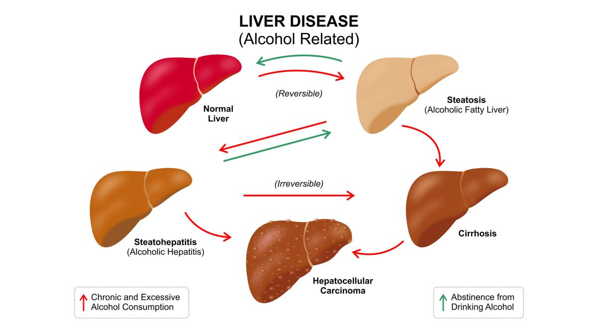
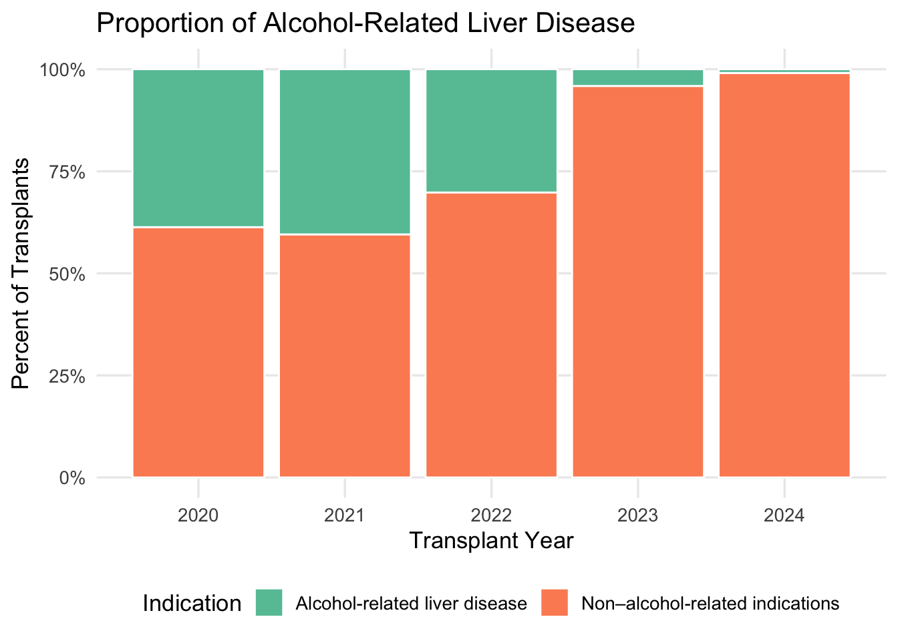
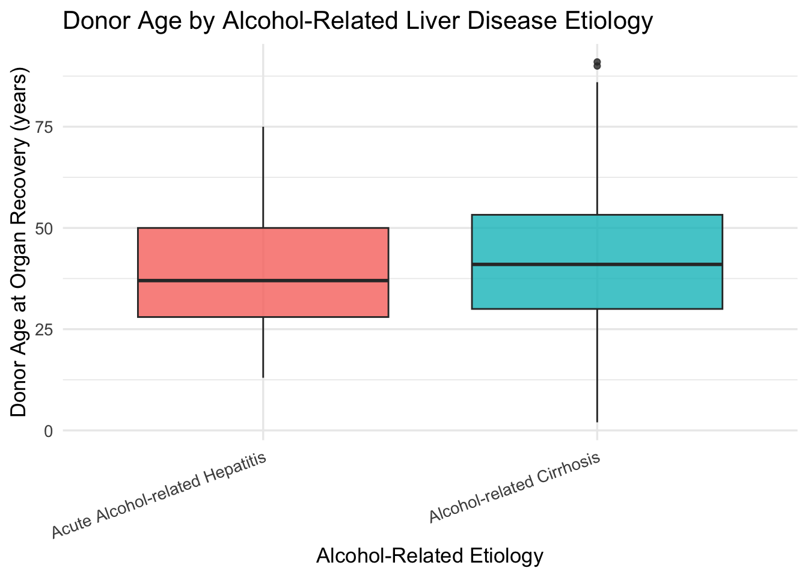

This section focuses on donor characteristics and prevalence,
highlighting alcohol-related etiologies. The following tables and
figures summarize the burden of alcohol-related disease and provide
statistical comparisons between acute alcohol-related hepatitis and
alcohol-related cirrhosis. This type of analysis is important because it
contextualizes how differences in donor age, donor source, and disease
subtype reflect broader shifts in transplant need and clinical
decision-making. By identifying these patterns, we gain insights that
can inform organ allocation priorities, improve clinical risk profiling,
and guide future research aimed at prevention, treatment, and health
system planning.

This diagram illustrates the progression of Alcohol-Associated Liver
Disease, showing reversible steatosis and hepatitis compared with
irreversible cirrhosis requiring advanced care
Source: Los Angeles Times, Alcoholic Hepatitis: Understanding Liver
Damage & Treatment.
Acute alcohol-related hepatitis represents a sudden inflammatory
injury to the liver caused by heavy alcohol use, and while severe, it
can improve with abstinence and treatment; in contrast, alcohol-related
cirrhosis reflects the advanced, irreversible stage of
Alcohol-Associated Liver Disease in which long-term injury has led to
fibrosis, scarring, and progressive liver failure. Understanding this
distinction is important because hepatitis may still be reversible with
coordinated medical care, whereas cirrhosis signals end-stage disease
requiring long-term management and, for some patients, liver
transplantation (Patel & Mueller, Alcohol-Associated Liver Disease,
2023).
Source: Patel R, Mueller M. Alcohol-Associated Liver Disease.
[Updated 2023 Jul 13]. In: StatPearls [Internet]. Treasure Island (FL):
StatPearls Publishing; 2025 Jan-. Available from: https://www.ncbi.nlm.nih.gov/books/NBK546632/
# Read in the full transplant dataset from the SAS file.
tx_li <- read_sas("~/Desktop/tx_li (1).sas7bdat")
# Create a cleaned liver transplant dataset for adults (≥18 years) from 2020 onward.
liver_data <- tx_li %>%
mutate(
# Create transplant and listing dates.
tx_date = as_date(REC_TX_DT),
listing_date = as_date(CAN_LISTING_DT),
# Extract transplant year.
tx_year = year(tx_date),
# Calculate days listed on the waitlist.
days_listed = as.numeric(difftime(tx_date, listing_date, units = "days")),
# Define alcohol-related liver disease subtypes.
alcohol_subtype = case_when(
CAN_DGN %in% c(4215, 4216) | CAN_DGN2 %in% c(4215, 4216) ~ "Alcohol-related Cirrhosis",
CAN_DGN == 4217 | CAN_DGN2 == 4217 ~ "Acute Alcohol-related Hepatitis",
TRUE ~ "Other"
),
# Create an indicator for ALD vs non-ALD.
ald_indication = if_else(alcohol_subtype == "Other", 0L, 1L)
) %>%
# Keep adult recipients with observed transplant date from 2020 onward.
filter(
!is.na(PERS_ID),
!is.na(tx_date),
tx_year >= 2020,
REC_AGE_AT_TX >= 18
) %>%
# Clean column names to snake_case format for analysis.
clean_names()
Proportion of Alcohol-Related Liver Disease
Proportion of adult liver transplants attributed to alcohol-related
versus non-alcohol-related diagnoses from 2020–2024, showing that
alcohol-related disease constitutes a substantial but variable portion
of transplant indications over time.
# Create a summary table showing the overall prevalence of alcohol-related liver disease.
ald_prevalence_overall <- liver_data %>%
count(ald_indication) %>%
mutate(
ald_label = if_else(
ald_indication == 1L,
"Alcohol-related liver disease",
"Non–alcohol-related indications"
),
pct = n / sum(n)
)
# Clean overall prevalence table for display.
ald_prevalence_overall_tbl <- ald_prevalence_overall %>%
transmute(
Indication = ald_label,
`Number of Transplants` = n,
`Percent of Transplants` = percent(pct, accuracy = 0.1)
)
ald_prevalence_overall_tbl %>%
kable(
caption = "Prevalence of Alcohol-Related Liver Disease Among Adult Liver Transplants (≥18, TX ≥2020).",
align = c("l", "r", "r")
) %>%
kable_styling(
full_width = FALSE,
bootstrap_options = c("striped", "hover", "condensed")
)
Prevalence of Alcohol-Related Liver Disease Among Adult Liver
Transplants (≥18, TX ≥2020).
|
Indication
|
Number of Transplants
|
Percent of Transplants
|
|
Non–alcohol-related indications
|
38933
|
79.5%
|
|
Alcohol-related liver disease
|
10032
|
20.5%
|
# Summarize the prevalence of alcohol-related liver disease by transplant year.
ald_prevalence_year <- liver_data %>%
count(tx_year, ald_indication) %>%
group_by(tx_year) %>%
mutate(
pct = n / sum(n),
ald_label = if_else(
ald_indication == 1L,
"Alcohol-related liver disease",
"Non–alcohol-related indications"
)
) %>%
ungroup()
# Make a wide, organized table by year: one row per year.
ald_prevalence_year_wide <- ald_prevalence_year %>%
select(tx_year, ald_label, n, pct) %>%
mutate(
pct = percent(pct, accuracy = 0.1),
ald_label = factor(
ald_label,
levels = c("Non–alcohol-related indications", "Alcohol-related liver disease")
)
) %>%
arrange(tx_year, ald_label) %>%
pivot_wider(
names_from = ald_label,
values_from = c(n, pct),
names_glue = "{ald_label} ({.value})"
)
ald_prevalence_year_wide %>%
kable(
caption = "Prevalence of Alcohol-Related Liver Disease by Transplant Year (Adults ≥18, TX ≥2020).",
col.names = c(
"Transplant Year",
"Non–ALD (N)", "ALD (N)",
"Non–ALD (%)", "ALD (%)"
),
align = c("c", "r", "r", "r", "r")
) %>%
kable_styling(
full_width = FALSE,
bootstrap_options = c("striped", "hover", "condensed")
)
Prevalence of Alcohol-Related Liver Disease by Transplant Year (Adults
≥18, TX ≥2020).
|
Transplant Year
|
Non–ALD (N)
|
ALD (N)
|
Non–ALD (%)
|
ALD (%)
|
|
2020
|
5153
|
3251
|
61.3%
|
38.7%
|
|
2021
|
5200
|
3534
|
59.5%
|
40.5%
|
|
2022
|
6283
|
2718
|
69.8%
|
30.2%
|
|
2023
|
9708
|
416
|
95.9%
|
4.1%
|
|
2024
|
10785
|
100
|
99.1%
|
0.9%
|
|
2025
|
1804
|
13
|
99.3%
|
0.7%
|
# Create a stacked bar plot showing the proportion of ALD vs non-ALD each year.
ggplot(
ald_prevalence_year %>%
filter(tx_year %in% 2020:2024),
aes(x = tx_year, y = pct, fill = ald_label)
) +
geom_col(color = "white") +
scale_y_continuous(labels = percent_format(accuracy = 1)) +
scale_fill_brewer(palette = "Set2") +
labs(
title = "Proportion of Alcohol-Related Liver Disease",
x = "Transplant Year",
y = "Percent of Transplants",
fill = "Indication"
) +
theme_minimal(base_size = 13) +
theme(
panel.grid.minor = element_blank(),
legend.position = "bottom"
)

Figure 1. Annual distribution of liver transplants by indication
shows that although alcohol-related disease accounted for a substantial
share in 2020–2022, its contribution declined sharply in later
years.
Donor Age by Alcohol-Related Liver Disease Etiology
Donor age distributions stratified by alcohol-related etiology,
illustrating visibly older donors among recipients transplanted for
alcohol-related cirrhosis compared with acute alcohol-related
hepatitis.
# Restrict to transplant recipients whose indication is alcohol-related (exclude "Other").
liver_ald <- liver_data %>%
filter(alcohol_subtype != "Other")
# Create a readable donor type factor (deceased vs living vs other / unknown).
liver_ald <- liver_ald %>%
mutate(
don_ty_factor = case_when(
don_ty == "C" ~ "Deceased Donor",
don_ty == "L" ~ "Living Donor",
TRUE ~ "Other / Unknown"
),
don_ty_factor = factor(
don_ty_factor,
levels = c("Deceased Donor", "Living Donor", "Other / Unknown")
)
)
## --- Table 1: Count of alcohol-related transplants by etiology -----------------
# Summarize the number of alcohol-related liver transplants by specific diagnosis.
etiology_tab <- liver_ald %>%
count(alcohol_subtype, name = "Number of Transplants") %>%
rename(`Alcohol-related Diagnosis` = alcohol_subtype)
# Display the etiology count table in a clean format.
etiology_tab %>%
kable(
caption = "Count of Alcohol-Related Liver Transplants by Etiology (Adults ≥18, TX ≥2020).",
align = c("l","r")
) %>%
kable_styling(
full_width = FALSE,
bootstrap_options = c("striped","hover","condensed")
)
Count of Alcohol-Related Liver Transplants by Etiology (Adults ≥18, TX
≥2020).
|
Alcohol-related Diagnosis
|
Number of Transplants
|
|
Acute Alcohol-related Hepatitis
|
511
|
|
Alcohol-related Cirrhosis
|
9521
|
## --- Table 2: Donor age summary by etiology ------------------------------------
# Compute summary statistics for donor age within each alcohol-related etiology.
donor_by_subtype <- liver_ald %>%
group_by(alcohol_subtype) %>%
summarise(
n_transplants = n(),
median_donor_age = median(don_age, na.rm = TRUE),
iqr_donor_age = IQR(don_age, na.rm = TRUE),
mean_donor_age = round(mean(don_age, na.rm = TRUE), 1),
sd_donor_age = round(sd(don_age, na.rm = TRUE), 1),
.groups = "drop"
) %>%
rename(
`Etiology` = alcohol_subtype,
`N Transplants` = n_transplants,
`Median Donor Age` = median_donor_age,
`IQR Donor Age` = iqr_donor_age,
`Mean Donor Age` = mean_donor_age,
`SD Donor Age` = sd_donor_age
)
# Display the donor age summary table.
donor_by_subtype %>%
kable(
caption = "Donor Age Summary by Alcohol-Related Liver Disease Etiology (Adults ≥18, TX ≥2020).",
align = c("l","r","r","r","r","r")
) %>%
kable_styling(
full_width = FALSE,
bootstrap_options = c("striped","hover","condensed")
)
Donor Age Summary by Alcohol-Related Liver Disease Etiology (Adults ≥18,
TX ≥2020).
|
Etiology
|
N Transplants
|
Median Donor Age
|
IQR Donor Age
|
Mean Donor Age
|
SD Donor Age
|
|
Acute Alcohol-related Hepatitis
|
511
|
37
|
22.00
|
38.8
|
13.4
|
|
Alcohol-related Cirrhosis
|
9521
|
41
|
23.25
|
41.7
|
14.9
|
## --- Figure: Donor age distribution by etiology --------------------------------
# Create a boxplot showing the distribution of donor age by alcohol-related etiology.
ggplot(
liver_ald,
aes(x = alcohol_subtype, y = don_age, fill = alcohol_subtype)
) +
geom_boxplot(alpha = 0.8, outlier_alpha = 0.6) +
labs(
title = "Donor Age by Alcohol-Related Liver Disease Etiology",
x = "Alcohol-Related Etiology",
y = "Donor Age at Organ Recovery (years)",
fill = "Etiology"
) +
theme_minimal(base_size = 13) +
theme(
legend.position = "none",
axis.text.x = element_text(angle = 20, hjust = 1)
)

Figure 2. Boxplots reflect older donor age among recipients
transplanted for alcohol-related cirrhosis compared with acute
alcohol-related hepatitis; this visual trend aligns with Wilcoxon
rank-sum test results indicating a statistically significant age
difference between groups.
## --- Table 3: Donor type (deceased vs living) by etiology ----------------------
# Build a 2x2 table showing donor type within each alcohol-related etiology.
donor_type_tab <- liver_ald %>%
filter(
alcohol_subtype %in% c("Alcohol-related Cirrhosis",
"Acute Alcohol-related Hepatitis"),
don_ty_factor %in% c("Deceased Donor", "Living Donor")
) %>%
count(alcohol_subtype, don_ty_factor) %>%
pivot_wider(
names_from = don_ty_factor,
values_from = n,
values_fill = 0
) %>%
rename(`Etiology` = alcohol_subtype)
# Display the donor type cross-tabulation.
donor_type_tab %>%
kable(
caption = "Cross-Tabulation of Alcohol-Related Etiology by Donor Type (Adults ≥18, TX ≥2020).",
align = c("l","r","r")
) %>%
kable_styling(
full_width = FALSE,
bootstrap_options = c("striped","hover","condensed")
)
Cross-Tabulation of Alcohol-Related Etiology by Donor Type (Adults ≥18,
TX ≥2020).
|
Etiology
|
Deceased Donor
|
Living Donor
|
|
Acute Alcohol-related Hepatitis
|
510
|
1
|
|
Alcohol-related Cirrhosis
|
9189
|
332
|
## --- Wilcoxon rank-sum test: donor age by etiology -----------------------------
# Prepare a two-group dataset (cirrhosis vs acute hepatitis) for the Wilcoxon test.
age_test_data <- liver_ald %>%
filter(alcohol_subtype %in% c("Alcohol-related Cirrhosis",
"Acute Alcohol-related Hepatitis")) %>%
filter(!is.na(don_age))
# Run the Wilcoxon rank-sum test comparing donor age between etiologies.
wilcox_test_result <- wilcox.test(
don_age ~ alcohol_subtype,
data = age_test_data
)
# Convert the Wilcoxon test output into a short, readable summary table.
wilcox_summary <- tibble::tibble(
Test = "Wilcoxon rank-sum test (donor age by etiology)",
W = as.numeric(wilcox_test_result$statistic),
`p-value` = format.pval(wilcox_test_result$p.value, digits = 3, eps = 0.001)
)
wilcox_summary %>%
kable(
caption = "Wilcoxon Rank-Sum Test Comparing Donor Age by Alcohol-Related Etiology.",
align = c("l","r","r")
) %>%
kable_styling(
full_width = FALSE,
bootstrap_options = c("striped","hover","condensed")
)
Wilcoxon Rank-Sum Test Comparing Donor Age by Alcohol-Related Etiology.
|
Test
|
W
|
p-value
|
|
Wilcoxon rank-sum test (donor age by etiology)
|
2167902
|
<0.001
|
## --- Chi-squared test: donor type by etiology ----------------------------------
# Convert the donor type cross-tabulation into a matrix for chi-squared testing.
donor_type_matrix <- donor_type_tab %>%
select(-Etiology) %>%
as.matrix()
# Perform a chi-squared test of donor type distribution across etiologies.
chisq_test_result <- stats::chisq.test(donor_type_matrix)
# Summarize the chi-squared test in a compact table for the report.
chisq_summary <- tibble::tibble(
Test = "Pearson's chi-squared test (etiology by donor type)",
`X-squared` = round(as.numeric(chisq_test_result$statistic), 2),
df = as.integer(chisq_test_result$parameter),
`p-value` = format.pval(chisq_test_result$p.value, digits = 3, eps = 0.001)
)
chisq_summary %>%
kable(
caption = "Chi-Squared Test of Alcohol-Related Etiology by Donor Type.",
align = c("l","r","r","r")
) %>%
kable_styling(
full_width = FALSE,
bootstrap_options = c("striped","hover","condensed")
)
Chi-Squared Test of Alcohol-Related Etiology by Donor Type.
|
Test
|
X-squared
|
df
|
p-value
|
|
Pearson’s chi-squared test (etiology by donor type)
|
15.36
|
1
|
<0.001
|
Results: The Wilcoxon rank-sum test was used to compare donor ages
because age distributions were skewed, and results showed a
statistically significant difference—donors for alcohol-related
cirrhosis tended to be older than those for acute alcohol-related
hepatitis (p < 0.001). A chi-squared test was applied to evaluate
whether donor type (living versus deceased) varied by etiology,
revealing a significant association (p < 0.001), with cirrhosis
recipients more likely to receive grafts from living donors.
Discussion: Overall, the findings suggest clinically meaningful
differences in donor age and donor source across alcohol-related disease
subgroups, reinforcing the value of statistical testing to evaluate
demographic and clinical patterns in transplant populations.
Limitations: This analysis is limited by its observational design,
which restricts causal interpretation and may reflect underlying
referral, listing, and allocation biases rather than true etiologic
differences. Additionally, unmeasured clinical factors, such as
comorbidities, disease severity, provider decision-making, and social
determinants influencing transplant eligibility, were not captured in
this dataset, potentially influencing the observed patterns in donor age
and donor type.